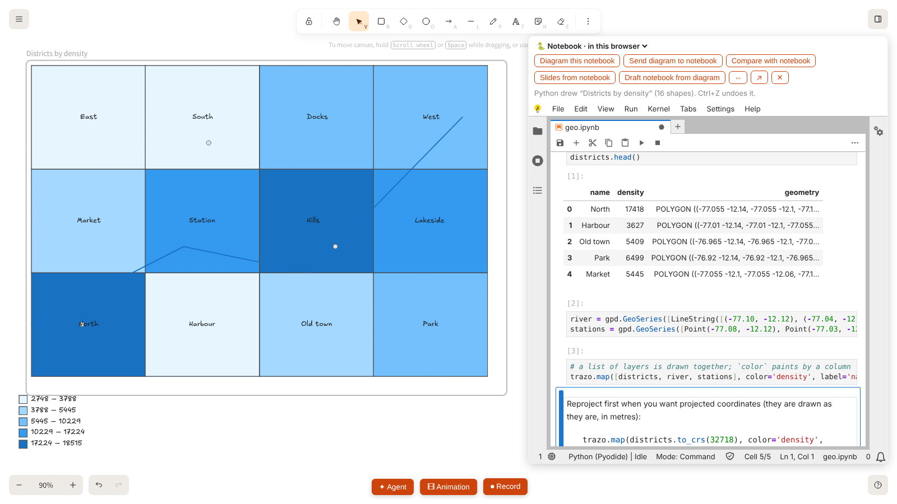

Trazo
Hand-drawn diagrams
that
move
Animate and narrate slides, run Python notebooks beside the canvas, and turn code into diagrams.
Local-first
Desktop app
Notebooks
Your own AI
github.com/balalex12/trazo
